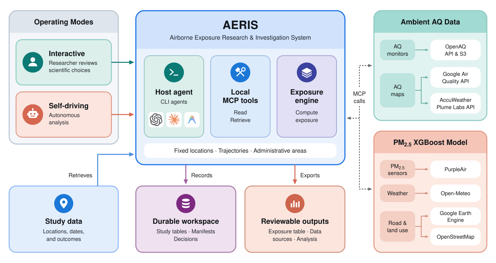
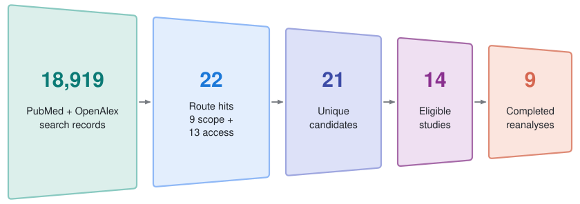
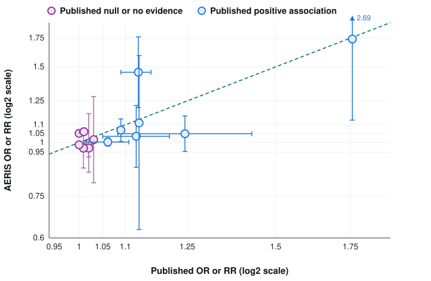
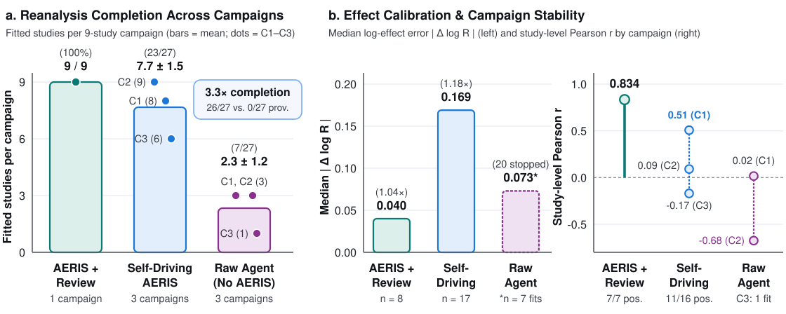

Towards Autonomous Environmental Health: AERIS, a Research Agent for Air-Pollution Exposure Assessment

.aeris workspace.
Overview
Air pollution harms human health and contributes to millions of deaths each year, yet many public-health studies omit it even when they record the locations and dates needed to estimate exposure. AERIS (Airborne Exposure Research & Investigation System) is a provider-neutral research harness and Model Context Protocol (MCP) server that gives coding agents the domain tools to link cohort locations and time windows to public air-quality records across fixed-location monitors, administrative polygons, and GPS trajectories.
To evaluate AERIS on a complete scientific workflow rather than isolated tool calls, we introduce source-substitution reanalysis: reconstructing a published study's pollution exposure from independent public measurements, linking it to the study's health outcomes, and re-estimating the health effects without access to the original authors' pollution tables.
Source-Substitution Reanalysis & Autonomy Controls
Screening 18,919 papers yielded nine published studies with open health data, reproducible statistical models, and sufficient air-quality data coverage. With researcher review, AERIS matched the direction of all seven published positive associations across 14 contrasts, with a median study-level log-effect difference of 0.040 (≈1.04× ratio; Pearson r = 0.834).


In three independent zero-intervention campaigns (27 study attempts), self-driving AERIS completed 23 of 27 reanalyses (8, 9, and 6 per campaign) compared with 7 of 27 (3, 3, and 1) for the same model without the AERIS harness—a 3.3× completion lift—though removing researcher review raised the median log-effect difference from 0.040 to 0.169.

| Evaluation Metric | AERIS + Researcher Review | Self-Driving AERIS (3 Campaigns) | Raw Agent Without AERIS (3 Campaigns) |
|---|---|---|---|
| Fitted Studies per Campaign | 9 / 9 (100%) | 7.7 ± 1.5 (23 / 27; C1–C3: 8, 9, 6) | 2.3 ± 1.2 (7 / 27; C1–C3: 3, 3, 1) |
| AERIS Exposure & Provenance Record | 9 / 9 | 26 / 27 | 0 / 27 |
| Published Positive Direction Retained | 7 / 7 | 11 / 16 | 3 / 4 |
| Published Null / No-Evidence Retained | 4 / 7 (all OECD) | 14 / 21 | 3 / 3 |
| Median Study-Level |Δ log R| | 0.040 (~1.04×) | 0.169 (~1.18×) | 0.073 (7 fits only; 20 stopped) |
| Study-Level Pearson r by Campaign | 0.834 | 0.507 · 0.091 · −0.170 | 0.016 · −0.675 · — |
Quickstart
git clone https://github.com/rlacombe/aeris.git && cd aeris
pip install -e ".[all]"
export OPENAQ_API_KEY="your_openaq_key"
# Launch with Codex, Claude Code, or Antigravity
./aeris.sh --agent codexCitation
@inproceedings{lacombe2026aeris,
title = {Towards Autonomous Environmental Health: AERIS, a Research Agent for Air-Pollution Exposure Assessment},
author = {Lacombe, Romain and Lautman, Ziv and Efrat, Nadav and Lu, Yougeng and Snyder, Michael P.},
booktitle = {NeurIPS 2026 Workshop on GenAI for Health (GenAI4Health)},
year = {2026},
url = {https://rlacombe.github.io/aeris/}
}